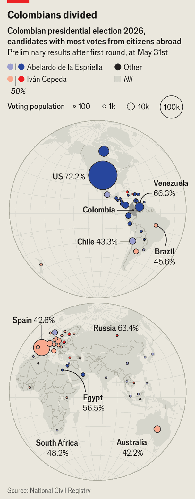

The Colombian diaspora is overwhelmingly right-wing
But not in Russia
June 18th 2026

Ahorn blares as people enter the church to vote for Colombia’s next president. María (not her real name) chose Abelardo de la Espriella, the right-wing populist known as El Tigre, calling him “the solution for our country”. It was the first time she had voted. Esteban, a graduate student, opted for Iván Cepeda, the left-winger bidding to emulate and succeed the incumbent, Gustavo Petro. He says he wants “equality in one of the most unequal countries in the world”.
Maria and Esteban cast ballots at St Paul’s in Marylebone in London. They are two of nearly 590,000 Colombians abroad who did so at 253 polling stations across 67 countries; polls were open for a week before the first-round vote on May 31st. Colombians can vote only in person, and must present a Colombian ID to do so.
In 1962 Colombia became one of the first countries in Latin America to grant political rights to its citizens abroad, when those resident outside the country were given a vote in presidential elections. In 1991 a new constitution expanded the franchise to those abroad for shorter periods, and let non-residents vote in congressional elections. In 2002 the diaspora was given a dedicated seat in Congress.
The 5m Colombians abroad are the largest diaspora of any big democracy in South America. Their annual remittances are worth nearly 3% of GDP. Though just a quarter are registered to vote, between 2002 and 2026 the number rose eightfold, from 165,000 to 1.4m. Turnout is up, too. In the first round in 2022, just 31% of voters registered abroad cast a ballot. This year 41% did so. “People feel very strongly” about both candidates and so turn out, says Christopher Sabatini of Chatham House, a think-tank in London. “This is one of those polarising elections.”
No candidate got a majority in the first round, prompting a run-off between Mr de la Espriella and Mr Cepeda on June 21st. But the diaspora favoured Mr de la Espriella, handing him 54% of their vote to 28% for Mr Cepeda. Colombians abroad tend to lean rightwards, but there is geographical variety (see map). In the United States Mr de la Espriella got 72% of the vote to Mr Cepeda’s 15%. In Spain, home to Europe’s largest diaspora community, Mr Cepeda got 43% of the vote.

Leydy Diossa-Jiménez, a political sociologist at the University of Michigan, says that “you cannot detach voting preferences of Colombians abroad from the historical causes of their exit.” Colombians in Europe historically may have been victims of right-wing paramilitary forces, whereas those in America fled armed violence from left-wing guerrillas. Mr Sabatini says many Colombian expats blame the deterioration of their country on “leftist guerrillas, and most recently Petro’s naive plan of total peace”. The “hothouse environment for politics” in Florida, where many Colombians in the diaspora are concentrated, “tends to reinforce these tendencies”.
Polling stations opened to the diaspora for the run-off vote on June 15th. Unless their turnout rises dramatically, they probably will not sway this election. Nor will their votes be particularly visible. In Peru, where the diaspora can only vote on election day, votes from abroad were naturally counted last. They tipped the conservative Keiko Fujimori to a wafer-thin victory in the presidential run-off on June 7th. The Colombian diaspora results, on the other hand, are released alongside the general vote. Still, if registration and turnout keep growing as they have in the past, Colombians abroad could become a powerful bloc in the 53m-strong country. ■
Sign up to El Boletín, our subscriber-only newsletter on Latin America, to understand the forces shaping a fascinating and complex region.